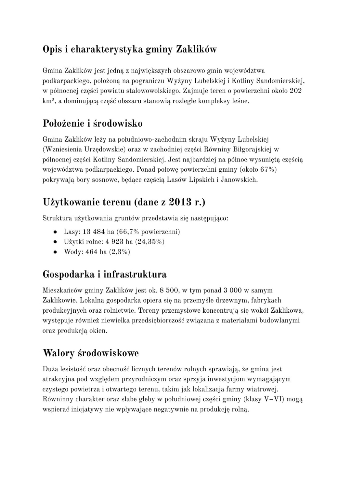
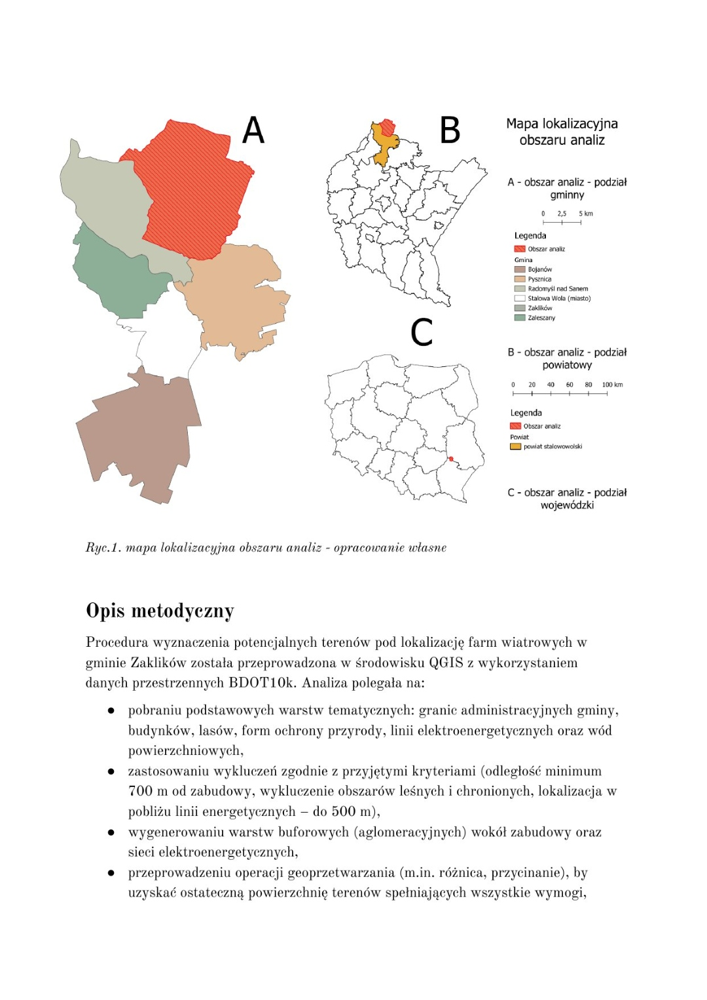

Planowanie przestrzenne
Lokalizacja farmy wiatrowej — gmina Zaklików



Wyznaczenie potencjalnych terenów pod farmę wiatrową. Wynik: obszar ok. 147 ha w północnej części gminy, przy istniejącej linii energetycznej.
Metodyka
Dane z BDOT10k. Zastosowano strefy wykluczeń buforowe: min. 700 m od zabudowy mieszkalnej, wykluczenie obszarów leśnych i prawnie chronionych (Natura 2000, parki krajobrazowe). Jako kryterium preferowane przyjęto odległość do 500 m od istniejących linii elektroenergetycznych. Warstwy wykluczeń połączono operacją różnicy geometrycznej, a pozostały obszar oceniono pod kątem ekspozycji i nachylenia terenu.